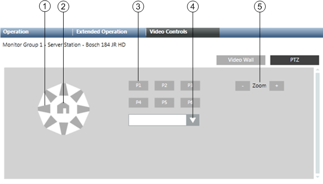

PTZ Panel
When you select a monitor in the video view that is connected to a PTZ camera, you can control pan-tilt-zoom settings of the camera from the Contextual pane. To do this select the Video Controls tab and then click PTZ. For related instructions see Control a PTZ Camera.
The panel includes control buttons for:
- Panning and tilting the camera view
- Selecting up to 6 presets
- Controlling zoom

PTZ Panel Commands | ||
| Name | Description |
1 | Panning buttons (8 buttons) | Pan the camera view according to the directional buttons. |
2 | Home button | Activates preset 1. |
3 | Position buttons (6 buttons) | Activate presets 1-6. |
4 | Preset selection | Displays the drop-down list of presets of available selections. The first 6 presets in the alphabetically sorted list correspond to buttons P1-P6. |
5 | Zoom control buttons | Adjust the zoom factor. |